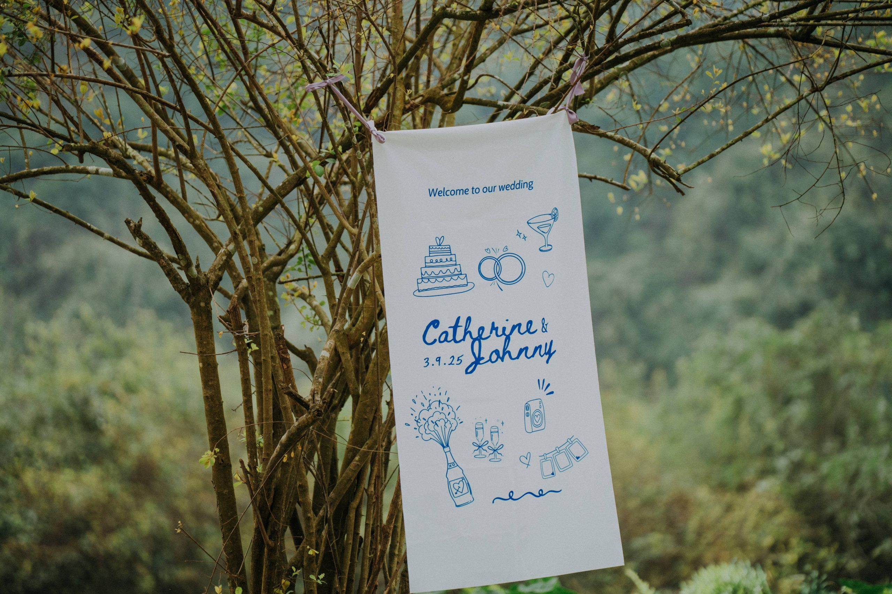

Plan the route
Concept development, venue orientation, vendor management, transport and accommodation support — so the journey makes sense before the ceremony begins.

An intimate ceremony, shaped around the two of you and a place worth travelling for.
Vietnam · private ceremony · a day made personalAn elopement removes the noise, not the care. The setting, the ceremony and the hours around them can be planned with a rare degree of attention — leaving room for the adventure that brought you there.

The real work is quiet: locating the right place, gathering the right people and making every detail feel native to the landscape rather than placed on top of it.
Concept development, venue orientation, vendor management, transport and accommodation support — so the journey makes sense before the ceremony begins.
Experienced teams explore locations throughout Vietnam to capture the atmosphere as much as the moment. WIS works with Huk Studio and Mirror Wedding.
Bridal hair and make-up with artists selected for a personal, location-aware look — including Zoey Art, Sally Pham, Thuong Lee and Huy Ji Chun.
A ceremony area, bouquet, reception table and stationery conceived with the surroundings — tailored to your style and story.

We build a wedding concept with the landscape in mind: a ceremony that feels discovered there, a bouquet that has a reason for its colour, and a small gathering that gives the place space to do its work.
“Eloping is an adventure — and a beautiful way to begin married life.”
For a different scale, setting or starting point, explore the other active ways WIS can work with you.
Bring us the place you are drawn to, the people you want near and the feeling you want the day to keep. We will help map the rest.
Begin the conversation